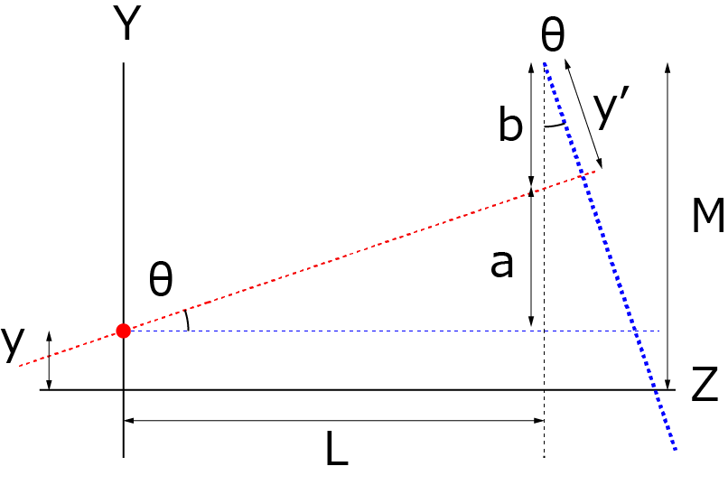

斜め上から波形を描画する方法-02
YZ平面（ Z方向にオフセットがない場合）
まずはYZ面を考えます（真横から見た様子）．

赤点の位置がどのように観察平面（太青点線）に投影されるかを考えます．
ここで，赤点の位置はY平面上に存在します（つまり，Z方向には０）．
紫平面の回転中心の高さをM，Y平面からの距離をLとすると，
\(\Large a = L \ tan \theta \)
\(\Large b = M - a - y \)
となるので，
\(\Large \begin{eqnarray} y' &=& b \ cos \theta \\
&=& ( M - a - y) \ cos \theta \\
&=&
( M - y) \ cos \theta - L \ sin \theta \\
\end{eqnarray} \)
となることがわかります．
次ページに， Z方向にオフセットがある場合がある場合を考えていきましょう．